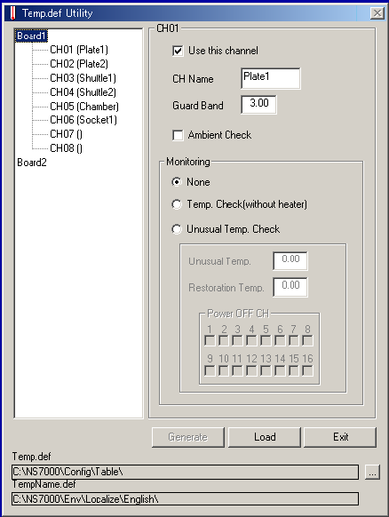

Service History
Subject: NS-7000 during HOT, chamber tried to heat up to 128 SP but at 100+, will suddenly show --- dash
Handler Model: NS-7000
Controller: RC520
Date: 10~13 Dec 2012
Symptom
Renesas KL NS-7000 during HOT, chamber tried to heat up to 128 SP but at 100+, will suddenly show ---.
Action
1) Chamber PT sensor and Thermo fuse checked. No problem.
2) Chamber monitor PT sensor connector resit and checked. Same.
3) With socket disabled, chamber able to heat up to 128 SP.
4) YAMATAKE tuning carried out for chamber and socket.
5) Chamber able to tune to 128 SP but socket unable to tune.
6) Socket alone for tuning but unable to heat up.
7) Socket PT sensor and thermo fuse checked. OK.
8) Suspect heater, SSR, YAMATAKE terminal.
9) Customer to check and feedback before purchase spare part.
Cause
Remarks
How to disable Socket Heater in NS-7000:
1) go to C:\NS7000\exe
2) double-click tempdefutility.exe
3) Click channel 6 for Socket Heater, uncheck "Use this channel".
